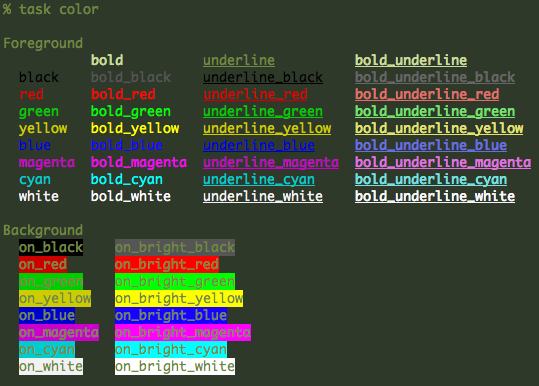

Colors
Task supports color in several places. In cases where you may specify a color, a foreground, a background, or a combination foreground and background color may be used. The following are valid foreground colors:
bold underline bold_underline
black bold_black underline_black bold_underline_black
red bold_red underline_red bold_underline_red
green bold_green underline_green bold_underline_green
yellow bold_yellow underline_yellow bold_underline_yellow
blue bold_blue underline_blue bold_underline_blue
magenta bold_magenta underline_magenta bold_underline_magenta
cyan bold_cyan underline_cyan bold_underline_cyan
white bold_white underline_white bold_underline_whiteand the following are valid background colors:
on_black on_bright_black
on_red on_bright_red
on_green on_bright_green
on_yellow on_bright_yellow
on_blue on_bright_blue
on_magenta on_bright_magenta
on_cyan on_bright_cyan
on_white on_bright_whiteDepending on your terminal color choices, task can display all the colors it supports with the command:
Copyright 2006-2008, P. Beckingham. All rights reserved.